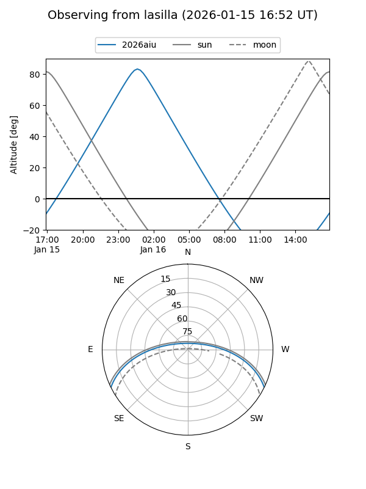
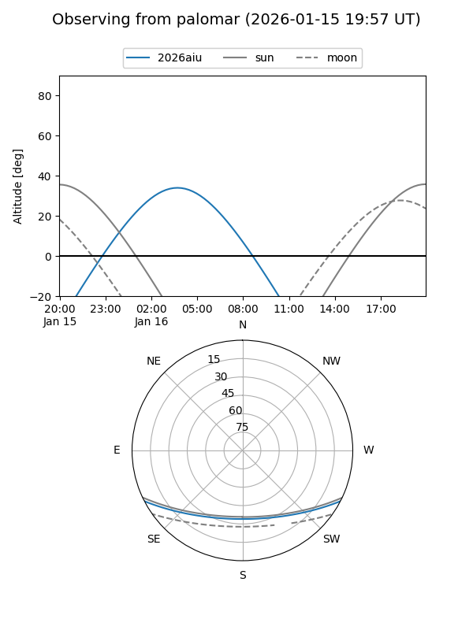

2026aiu
Target 2026aiu at 2026-01-16 06:05
Aliases and brokers:
FINK: link
Lasair: link
ALeRCE: link
TNS: link
YSE: link
alt names
ZTF26aabmpcq (ztf,fink_ztf)
2026aiu (tns,yse)
Coordinates:
equatorial (ra, dec) = 53.9488,-22.70738
equatorial (HMS+DMS) = 03:35:47.72,-22:42:26.58
galactic (l, b) = (215.4372,-52.63633)
Flags:
Photometry:
last ztfr=19.70
1 ztfr detections
Lightcurve

Visibility


Additional plots